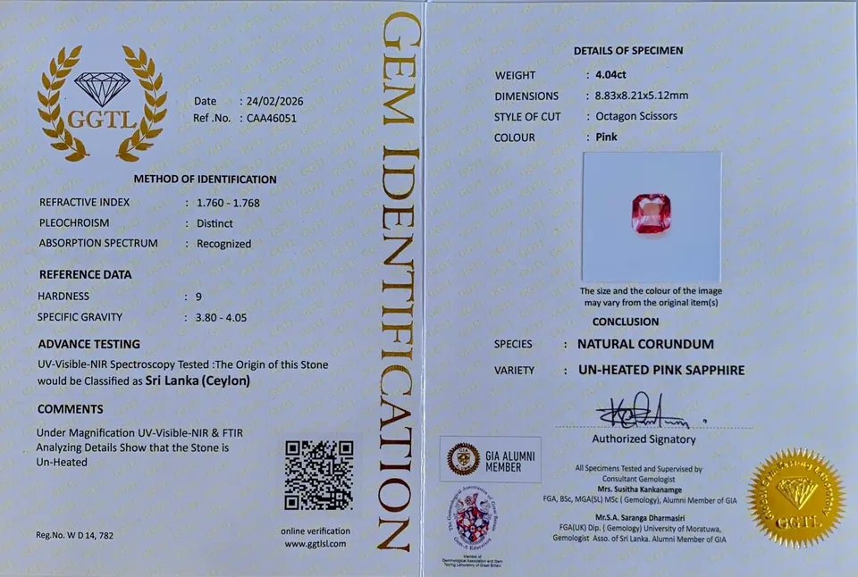

Demystifying Gemstone Certifications: GIA, NGJA and GRS Explained
 By Shavindu, gemologist & founder
·
·2 min read
By Shavindu, gemologist & founder
·
·2 min read

Investing in a premium Ceylon gemstone is a significant financial and emotional decision. Whether you are acquiring a cornflower blue sapphire for a bespoke engagement ring or a pigeon blood ruby for your collection, visual beauty alone is not enough. In the luxury gemstone market, authenticity is paramount.
This is where gemstone certifications—or gemological grading reports—come into play. However, the alphabet soup of grading laboratories (GIA, NGJA, GRS) can be overwhelming for a first-time buyer. Here is a definitive guide to understanding what these certificates mean and why they are the absolute foundation of your investment.
What is a Gemstone Certification?
A gemstone certificate is an independent scientific report issued by a recognized gemological laboratory. It acts as the "passport" for your stone. A reliable report will explicitly state:
- Identification:Whether the stone is natural or synthetic.
- Origin:The geographic location where the stone was mined (e.g., Ceylon/Sri Lanka, Burma, Madagascar).
- Treatments:Any enhancements the stone has undergone, such as standard heat treatment or unacceptable practices like glass filling or beryllium diffusion.
- Specifications:Precise measurements, carat weight, shape, and cutting style.
Crucial Note: A grading report does not state the financial value of a gemstone. It is a scientific analysis, not an appraisal.
The "Big Three" Gemological Labs You Should Know
1. GIA (Gemological Institute of America)
The GIA is widely considered the gold standard in global gemology. They invented the "4 Cs" of diamond grading and apply the same rigorous, unbiased scientific standards to colored gemstones.
Best For:High-value investments and international resale. A GIA report carries universal unquestioned authority.
2. NGJA (National Gem and Jewellery Authority of Sri Lanka)
As a buyer looking specifically for Ceylon sapphires, the NGJA report is incredibly valuable. It is a state-regulatory body in Sri Lanka ensuring that stones exported from the country meet strict authenticity standards.
Best For:Verifying the authentic "Ceylon" origin directly from the source.
3. GRS (GemResearch Swisslab)
GRS is highly respected in the colored gemstone industry, particularly for their origin determination and proprietary color grading terms (such as identifying a specific sapphire as "Royal Blue").
Best For:Premium colored stones where specific color terminology and geographic origin significantly impact market value.
The FACET Promise
A certificate is only as reliable as the laboratory that issues it and the jeweler who provides it. Every premium gemstone in our collection is accompanied by verifiable documentation from globally recognized laboratories like the GIA, NGJA, or GRS. We believe in absolute transparency because true luxury requires no hidden compromises.